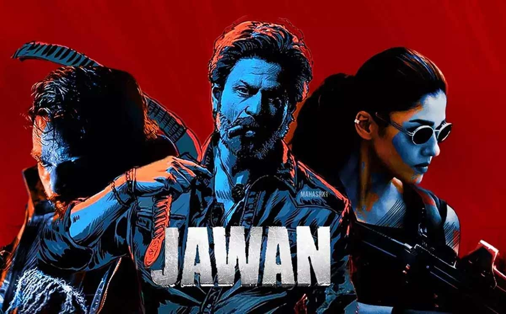

Action in Indian Cinema
The action genre has long been one of Bollywood’s most thrilling and dynamic forms of storytelling. Action films captivate audiences with explosive energy, showcasing heroes who face intense challenges, protect justice, and often take on corrupt systems or criminal empires.
Popular Action Styles
- Masala Action: A mix of action, drama, comedy, and romance (e.g., Wanted)
- Revenge Drama: Centered around a protagonist seeking justice (e.g., Ghajini)
- Patriotic Action: Nationalism-driven stories with action-packed plots (e.g., Jawan)
- Historical Action Epics: Set in grand historical contexts (e.g., RRR)
Notable Action Films
- Sholay (1975, dir. Ramesh Sippy) – Iconic blend of Western-style action and Indian drama
- Ghajini (2008, dir. A. R. Murugadoss) – A memory-lost avenger’s emotional and physical journey
- RRR (2022, dir. S. S. Rajamouli) – Pan-India epic of rebellion and friendship
- Jawan (2023, dir. Atlee) – High-tech action with patriotic flavor and mass appeal
|

|